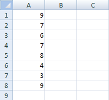
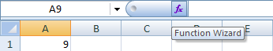
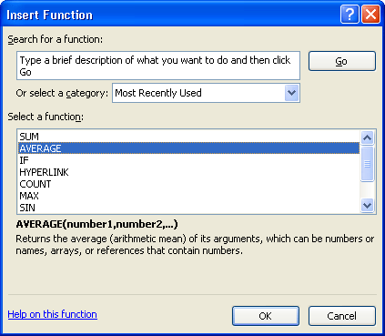
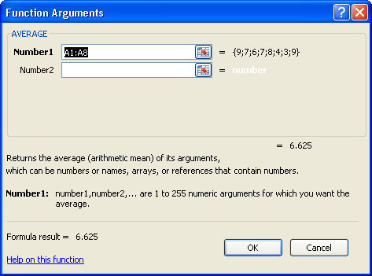
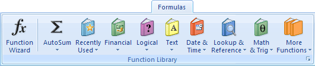
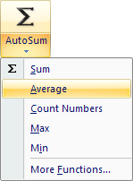
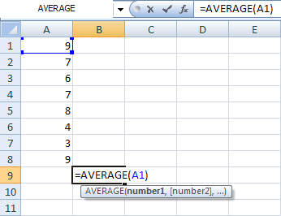
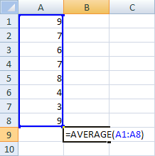
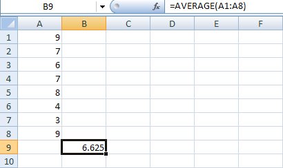
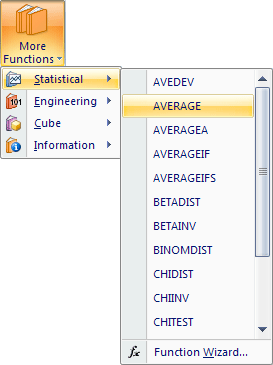

Free
computer Tutorials
|
Free
computer Tutorials
|
|
 HOME HOME
|
|
||||
Microsoft Excel 2007 to 2010The Average Function in ExcelIf you're trying to work out an average, you're trying to calculate what the most common value is. For example, if a class of eight students took exams, you may want to know what the average exam score was. In other words, what result most students can expect to get. In order to calculate an average, you'd add up all eight exam scores and divide by how many students took the exam. So if the total for all eight students was 400, dividing by 8 would get you 50 as the average grade. If any students were below the average, you can tell at a glance. In Excel , there is an easy way to calculate the average of some numbers - just use the inbuilt Average function. Start a new spreadsheet and enter the following exams scores in cells A1 to A8, as in the image below:  Click in cell A9, and we'll see how to use the Average function in Excel 2007. There are two ways we can do this. Try method 1 first.
Method 1Next to the formula bar, you'll see an FX button. This is the Formula
Wizard:  When you click the FX button, you'll see the Insert Function dialogue box appear:  The Insert Function dialogue box shows a list functions. These are the just the common ones. To see more functions, click the drop down list to the right of Select a category. The one we want is displayed under Select a function, though - Average. Click on this, and then click OK. When you click OK, another dialogue box appears. On this dialogue box, you select the data that you want to include in your function:  If you look in the Number1 box, you'll see Excel has guessed which cells we want to use for our Average function - A1:A8. It evens gives the answer to the Function - 6.625. Click OK to insert the function.
Method 2The second way to enter a Function in Excel is through the panels on
the Ribbon. Try this:
 As you can see, in Excel functions are split into categories. The Average function is in a few places. The easiest way to use Average is with AutoSum. Click the down arrow on AutoSum to see the following:  Now click Average from the menu. Because the answer is going in cell B9, Excel doesn't know which cells you want to use in the function, so it can't give you a quick answer. AutoSum is good when the data is in the same row or column. But when it's not, you have to tell it what to calculate. So click inside cell A1 and you'll see the cell selected  Hold down your left mouse button over the bottom right blue square, and drag to cell A8:  Excel fills in the cells for your function. Let go of the left mouse button, and then press the Enter key on your keyboard. The correct answer is place in cell B9:  You can also find the Average function on the More Functions menu. Click Statistical, and you'll see it there:  Of course, once you know the correct function, you could simply type it all out in the Formula bar yourself! Try this exercise. Exercise You start your own online business and find that sales for the first week are these: Monday £120.45 Use a function to work out how much you earned, on average, each day.
In the next part, we'll take a look at Date functions in Excel. |
|||||
|